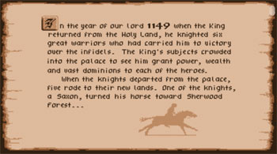
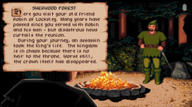
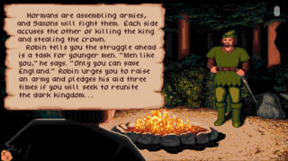

> Menus <
To select an option from the game menu simply move the arrow
to the desired option and tap the screen. To abandon a selection click away from the map.
> Introduction <



> Hold tournament <
You must have at least
five gold to pay for a joust.
Other Lords may hold tournaments as well, and your attendance is required under the code of chivalry. Use your finger on the touch screen
to aim the tip of your lance at the center of your opponents shield.
hint: Try to hold the lance down
and concentrate on lateral movements.
> Seek conquest <
Choose this option at
home to
Build the campaign army.
Transfer men from your home army
to the campaign army by clicking on any of the items-but make your choices carefully, there isn't time
to change your orders. Hold down the right button and then click the left to transfer items in groups
of five. You may
Send forth the campaign army to neighboring territories, your home territory or
enlist Robin's help by clicking on Sherwood Forest. Undefended lands are captured easily, but you
will usually meet some resistance and lose a few men in the effort.
> Go raiding <
Add to your treasure by raiding an enemy lord's castle. When your men enter
the castle courtyard they follow your arrow on the screen. You are the handsome swordsman in the lead.
To thrust with your sword tap the screen. Try to strike your opponent while his sword is in an upright
position. Double-tap for a double thrust, and don't dally or you may be captured. You may ask Robin for
help by clicking on Sherwood Forest after the
Select a castle to raid prompt appears.
> Build army <
You may build your
home army at any time, buying men, knights, catapults
and castles to defend your lands. Click on the item you want to buy or hold down the right button and
click on the left to speed up the transaction.
> Rad map <
Your advisors can give you valuable information about the other Lords and
which pieces of property are richest in vassals and income.
> Laying siege to a castle <
You must purchase a catapult and transfer it to your campaign army before you can attack territory
protected by a castle. Drag your finger down to pull back the catapult arm. Tap the screen to hurl
the boulder. Try to hit the top of the wall first, then lower your aim to continue destroying
the wall all the way down to its base. If you destroy the castle wall, the resulting battle
will be easier to win.
> Battles <
When the battle display appears you must react quickly. You may change your tactics at any time during the
battle by clicking on a new strategy.
Use Ferocious attack only as a last resort, and avoid using it to begin a battle.
Choosing this tactic too quickly may send your men into a state of confusion, and you’ll have to order
a hasty retreat to regroup. If your campaign army is attacked and you retreat from the battle your army
will be sent home. When your home castle is attacked, it will be displayed before going into the battle.
If you lose your castle, press the restart button to play again. You will succeed more often in battle
with a beautiful lady at your side. So if a Saxon lady is kidnapped, try to rescue her. Fail to even
attempt a rescue and you will lose the respect of your men.